Docs
Porchlight lets cloud agents like Claude and ChatGPT use the MCP servers on your Mac, through a relay in your own Cloudflare account. Here’s how to set it up.
Install
With Homebrew:
brew install --cask strazan/tap/porchlightOr download it, unzip, and move Porchlight to your Applications folder.
Porchlight needs macOS 14 or later.
Build from source
You’ll need Xcode.
git clone https://github.com/strazan/porchlight && cd porchlight && make appSet up
Three steps: put up your relay, add your servers, and let an app in.
1Deploy your relay
Click the lightbulb in the menu bar and choose Set Up Porchlight…
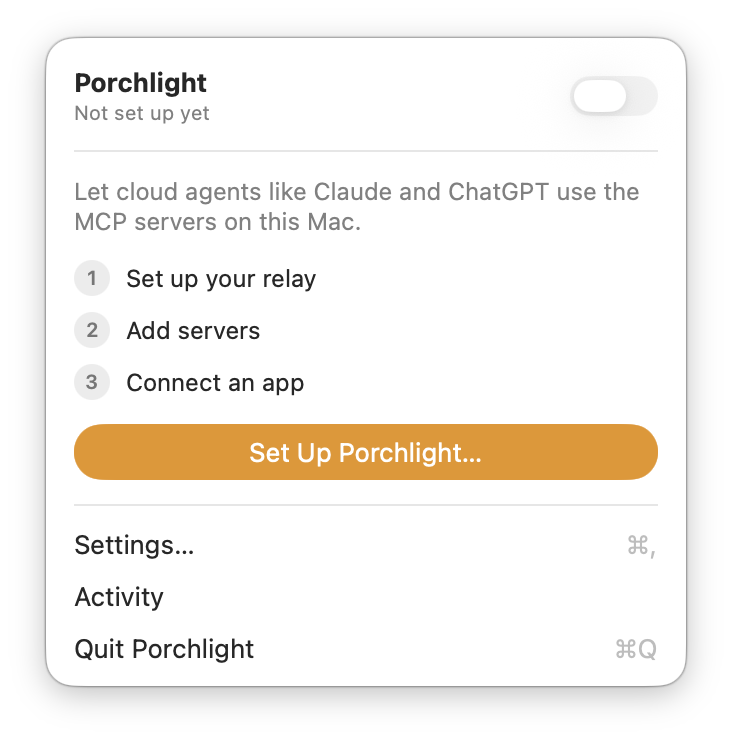
In Settings → Relay, click Deploy to Cloudflare… You’ll need a free Cloudflare account.
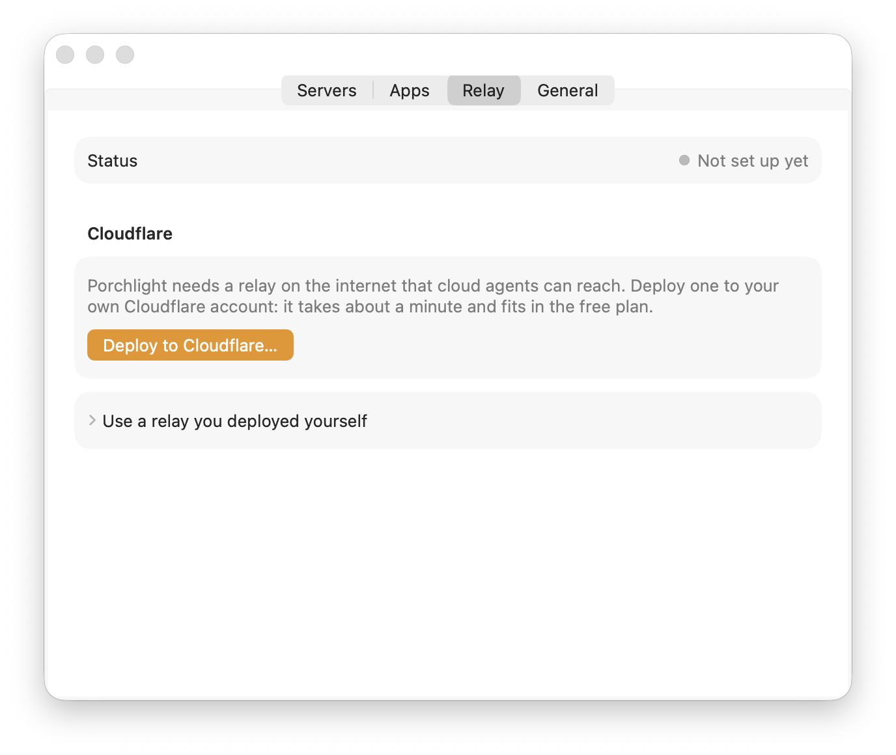
Porchlight opens a Cloudflare page for a new API token with the permissions already filled in (Workers and Workers KV). Create the token and paste it back into Porchlight.
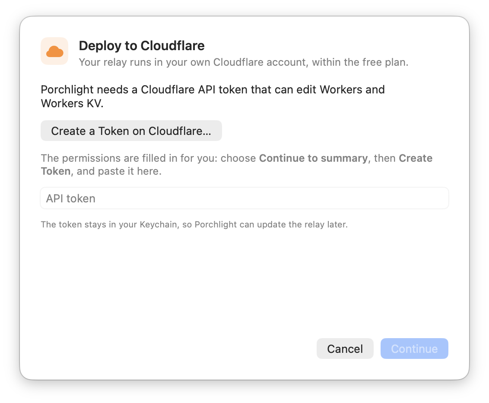
Porchlight deploys the relay to your own Cloudflare account, on the free plan, at a workers.dev address. No domain needed.
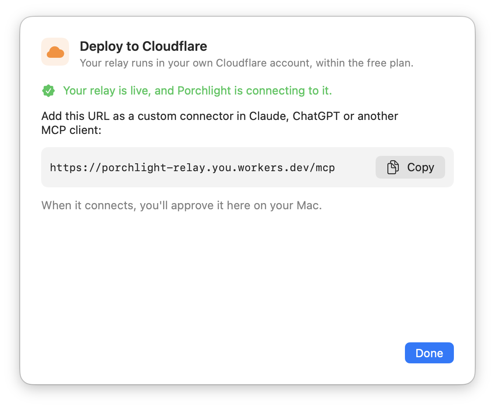
2Add your servers
In Settings → Servers, Import… brings in the servers you already use in Claude Desktop (including its extensions), Claude Code and Cursor.
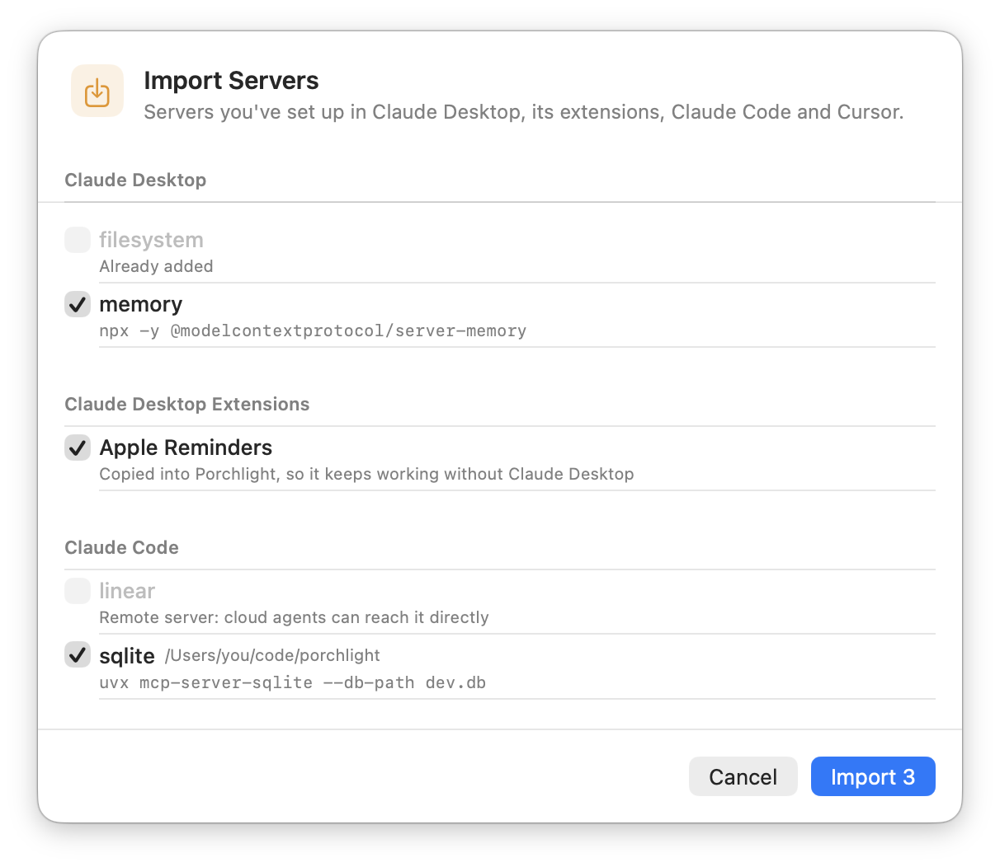
Or click + to add one yourself: a command (like npx …) or a local URL, such as the one Obsidian’s plugin serves. HTTP servers can take an API key or headers here too.
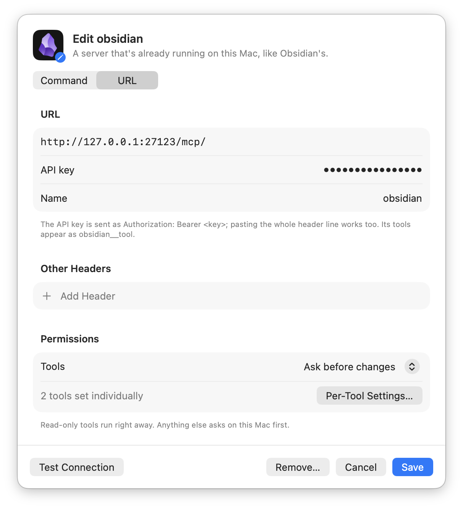
3Connect an app
Copy the connector URL from the menu.
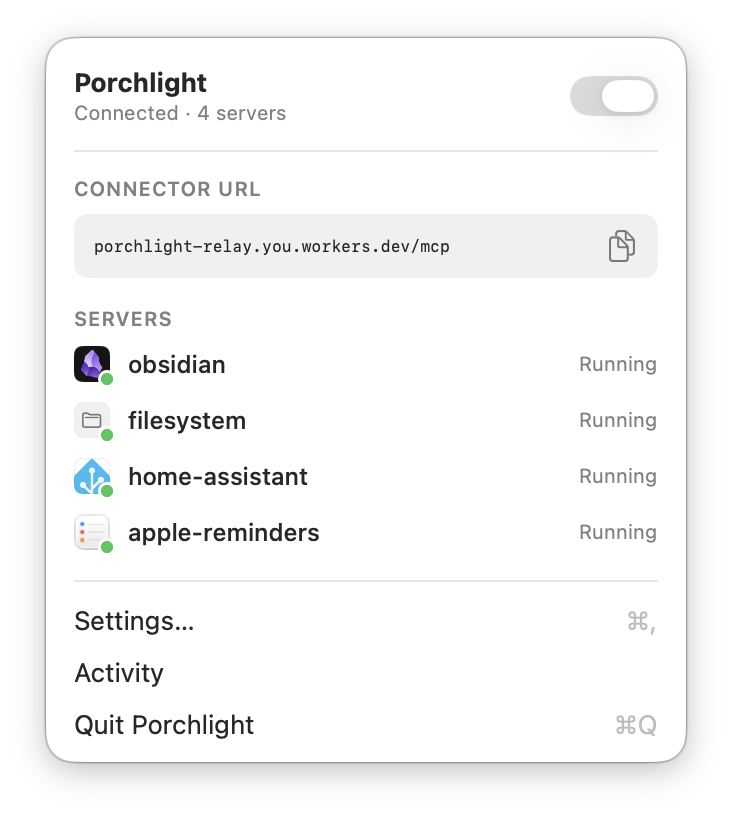
Add it as a custom connector in the app. In Claude: Settings → Connectors → Add custom connector. The browser shows a six-digit code and your Mac shows the same one. Allow it when they match.
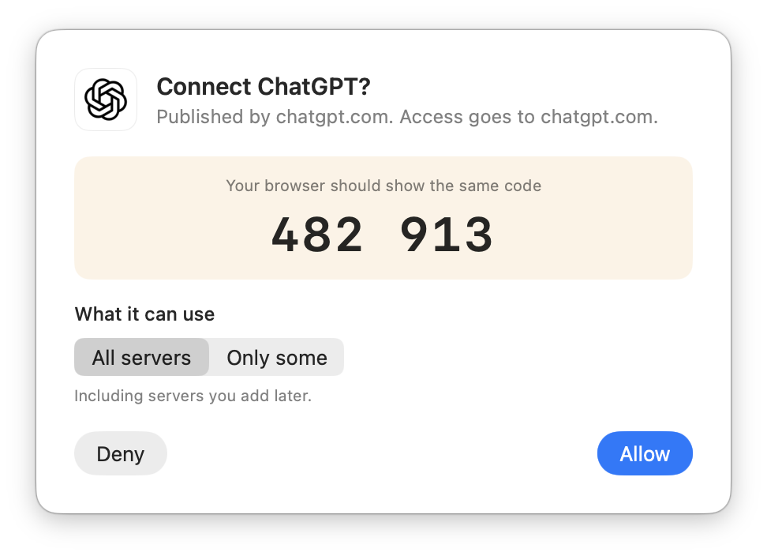
One URL, ending in /mcp, has all your servers, with tools named server__tool. Each server also has its own URL, /mcp/<name>, if you’d rather add them separately.
Permissions
Read-only tools run right away. Anything that can change things asks first and shows what the app wants to do: allow it once, always, or deny it.
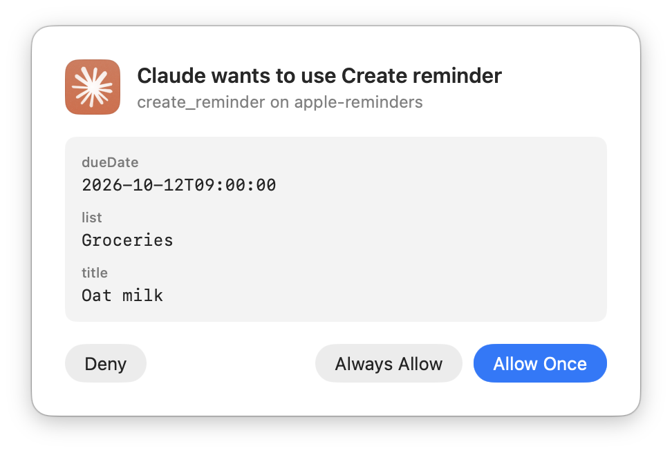
Set each tool to Allow, Ask or Block under a server’s ⓘ. Blocked tools are hidden from apps entirely.
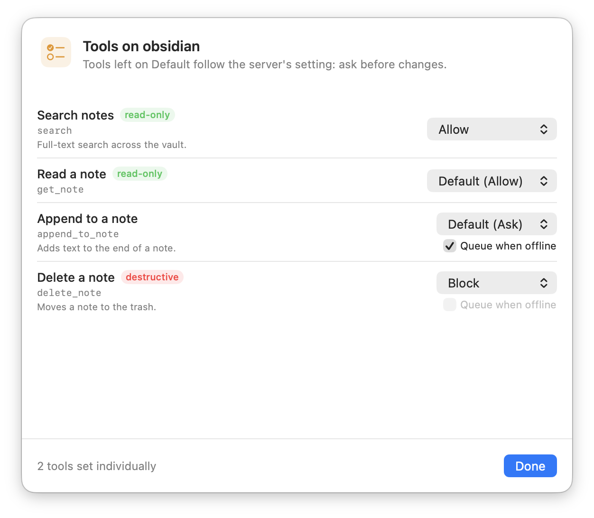
Give an app only some of your servers, and revoke any app at any time in Settings → Apps.
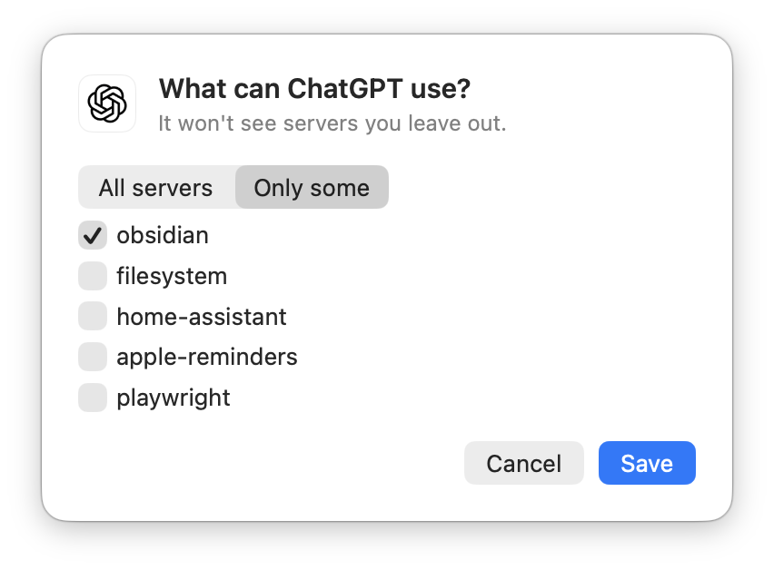
Activity shows every request with its app, tool, server, time and result.
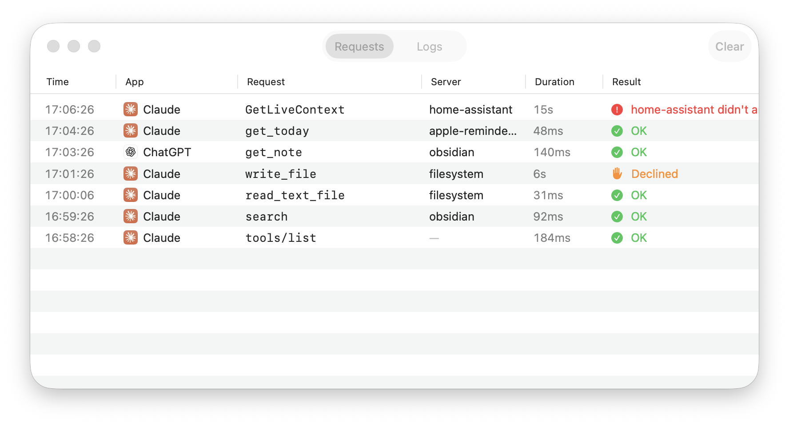
While your Mac is asleep
Porchlight needs your Mac awake to answer. It can keep it from idle-sleeping while it’s on, in Settings → General. Closing the lid still puts it to sleep.
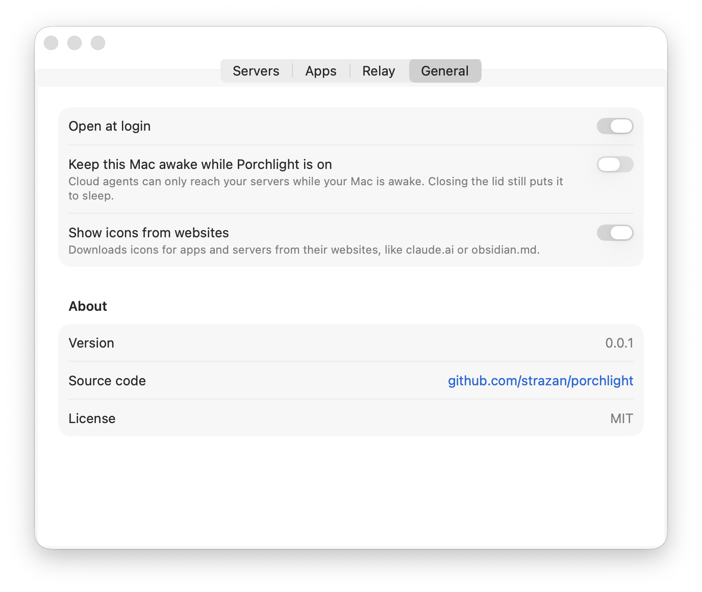
While your Mac is offline, apps still see your tools. Calls to tools that only add something, like creating a reminder, are saved by the relay, encrypted to a key only your Mac has, for up to 7 days. They run when your Mac is back, asking first if the tool is set to Ask.
Reads, edits and deletes get a clear “your Mac is offline” answer instead. You can change this per tool with Queue when offline in the tool settings. It’s on by default for tools that only add.
Security
- Apps sign in properly
- OAuth 2.1 with PKCE, short-lived tokens, dynamic client registration and client metadata documents. Every new app needs your approval on your Mac, with matching codes.
- Nothing connects in
- Your Mac makes one outbound connection to your relay. Nothing on your network listens to the internet.
- Your infrastructure
- The relay runs in your Cloudflare account, with no Porchlight service in between. It keeps sign-in records, never your files, notes or tool results. Queued requests are encrypted to your Mac’s key.
Found a security issue? Please report it privately.
For developers
- The protocol between the relay and the Mac.
- Running it all locally, and
porchlight-cli: see CONTRIBUTING.md. - Porchlight is MIT licensed.